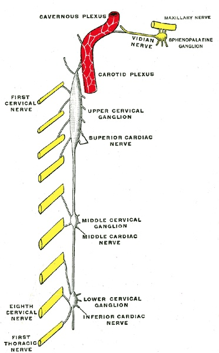

💪 Sức khỏe Nam giới
Nutrition — Nutrition for Better Sperm HealthDeep dive⏱ 8 phút đọc
Dinh Dưỡng Nâng Cao Chất Lượng Tinh Trùng: Bảo Vệ DNA & Tăng Khả Năng Vận Động
Theo nghiên cứu chấn động của Đại học Hebrew đăng trên tạp chí Human Reproduction Update, số lượng tinh trùng của nam giới trên toàn cầu đã sụt giảm hơn 50% trong nửa thế kỷ qua. Khác với tế bào trứng của phụ nữ vốn đã có sẵn từ khi sinh ra, tinh trùng nam giới được sản xuất mới liên tục theo chu kỳ 74 ngày. Điều này đồng nghĩa với việc: Bạn hoàn toàn có thể tái sinh toàn bộ chất lượng giống nòi thông qua một phác đồ dinh dưỡng chống oxy hóa chuẩn xác.
Nguồn nghiên cứu & Thiết bị: Human Reproduction Update & World Health Organization (WHO Semen Manual 6th Ed)•Màn hình App: Reproductive Health & Sperm Analysis Screen•Chỉ số: Spermatogenic Cycle (74 Days), DNA Fragmentation & Semen Parameters
💡Điểm Cốt Lõi & Hành Động Thực Tế
Chu kỳ sinh tinh kéo dài trung bình 74 ngày cộng thêm 14 ngày trưởng thành tại mào tinh hoàn. Tinh trùng cực kỳ dễ bị tổn thương bởi các gốc tự do ROS gây đứt gãy DNA. Bổ sung CoQ10, L-Carnitine, Lycopene và Omega-3 EPA/DHA trong tối thiểu 90 ngày giúp cải thiện rõ rệt mật độ, độ dị động và hình thái tinh trùng theo tiêu chuẩn WHO.
Cuộc Khủng Hoảng Vô Sinh Nam Giới & Con Số 74 Ngày Kỷ Diệu
Phân tích tổng hợp từ hơn 185 nghiên cứu trên 42.935 nam giới của Levine et al. (Human Reproduction Update, 2017) đã gióng lên hồi chuông báo động: Mật độ tinh trùng trung bình của nam giới phương Tây đã giảm từ 99 triệu/mL (năm 1973) xuống chỉ còn 47 triệu/mL (năm 2011)—tốc độ sụt giảm 1.4%/năm.
Tuy nhiên, có một tin vui tuyệt vời từ góc độ sinh học tế bào:
- Toàn bộ quá trình tạo ra một thế hệ tinh trùng mới (Spermatogenesis) từ tế bào mầm tinh nguyên bào, trải qua quá trình giảm phân, đóng gói chromatin và mọc đuôi roi kéo dài trung bình 74 ngày.
- Thêm khoảng 12 đến 14 ngày tinh trùng di chuyển qua mào tinh hoàn (Epididymis) để học cách bơi và hoàn thiện màng bọc bảo vệ.
Điều này có nghĩa là: Những gì bạn ăn, uống, hít thở và tập luyện trong 3 tháng hôm nay sẽ quyết định 100% chất lượng của những chú tinh binh chào đời sau 90 ngày nữa!

📊 Tiến Trình Sinh Tinh Học: Màng tế bào tinh trùng chứa nồng độ axit béo không bão hòa đa (PUFA) cực cao, khiến chúng trở thành miếng mồi ngon cho stress oxy hóa nếu thiếu vi chất bảo vệ. Nguồn sơ đồ: Wikimedia Commons ↗
4 Thông Số Tinh Dịch Đồ Tiêu Chuẩn WHO (Phiên Bản 6 - 2021)
Khi thực hiện xét nghiệm Tinh dịch đồ (Semen Analysis), các tiêu chuẩn tối thiểu cần đạt bao gồm:
Chỉ Số Tinh Dịch
Mức Chuẩn Bình Thường Của WHO (Ngưỡng 5th Percentile)
Ý Nghĩa Chức Năng Sinh Học
Thể tích tinh dịch (Volume)
≥ 1.4 mL
Thể hiện chức năng tiết dịch của túi tinh và tuyến tiền liệt.
Mật độ tinh trùng (Concentration)
≥ 16 triệu tinh trùng/mL (Tổng số ≥ 39 triệu/lần xuất tinh)
Đảm bảo đủ số lượng vượt qua môi trường axit của âm đạo.
Độ di động tiến tới (Progressive Motility)
≥ 30% (Tổng di động PR + NP ≥ 42%)
Tinh trùng có khả năng bơi thẳng về phía trước để tiếp cận ống dẫn trứng.
Hình thái bình thường (Normal Morphology)
≥ 4% (Theo tiêu chuẩn nghiêm ngặt Kruger)
Tinh trùng có đầu hình oval hoàn hảo, thân thẳng và đuôi đơn để xuyên qua vỏ trứng.
Chỉ số đứt gãy DNA (DFI - DNA Fragmentation)
< 15% (Tối ưu) / Nguy cơ cao nếu >25%
Phản ánh tính toàn vẹn của bộ gen; DFI cao gây sảy thai liên tiếp hoặc thất bại IVF.
4 Dưỡng Chất "Bọc Thép" Bảo Vệ DNA Tinh Trùng
Coenzyme Q10 (Ubiquinol - 200mg/ngày): Ty thể ở phần cổ tinh trùng là nhà máy năng lượng cung cấp ATP cho đuôi bơi. CoQ10 tập trung dày đặc tại đây, bảo vệ ty thể khỏi bị oxy hóa và tăng tốc độ bơi tiến tới rõ rệt (Salas-Huetos et al.).
L-Carnitine & Acetyl-L-Carnitine (2.000mg/ngày): Vận chuyển axit béo chuỗi dài vào ty thể để đốt cháy tạo năng lượng vận động cho tinh trùng; giảm tỷ lệ tinh trùng chết hoặc dị dạng.
Lycopene (Chiết xuất cà chua chín - 15–30mg/ngày): Chất chống oxy hóa carotenoid mạnh mẽ nhất giúp hòa tan trong lipid màng tế bào, giảm tỷ lệ đứt gãy DNA tinh trùng (DFI) tới hơn 40%.
Axit Béo Omega-3 (DHA & EPA - 1.500mg/ngày): DHA chiếm hơn 50% cấu trúc lipid của đuôi tinh trùng, quyết định độ mềm dẻo của màng để tinh trùng có thể uốn lượn vượt dòng chất nhầy cổ tử cung.
Giao Thức 90 Ngày "Tái Sinh Tinh Trùng" Chuẩn Y Khoa
Tuân Thủ Liệu Trình Tối Thiểu 90 Ngày: Tuyệt đối không nản lòng sau vài tuần. Hãy duy trì phác đồ bổ sung liên tục đủ 3 tháng để bao trọn một chu kỳ sinh tinh hoàn chỉnh.
Hạ Nhiệt Độ Vùng Kín (Scrotal Cooling): Nhiệt độ bìu bắt buộc phải thấp hơn thân nhiệt 2°C đến 4°C (33.5°C – 34.5°C). Tránh xa bồn tắm nước nóng, xông hơi sauna, không đặt laptop trực tiếp lên đùi và mặc quần lót cotton thoáng rộng.
Cắt Giảm Độc Tố Môi Trường: Ngừng hút thuốc lá và vaping (nicotine và cadmium phá hủy cấu trúc tinh trùng); hạn chế uống rượu bia; chọn thực phẩm hữu cơ để tránh thuốc trừ sâu gốc clo hữu cơ.
Kiểm Tra Lại Tinh Dịch Đồ Sau 3 Tháng: Làm lại xét nghiệm tại các trung tâm hỗ trợ sinh sản uy tín sau 3–5 ngày kiêng xuất tinh để đánh giá sự cải thiện về mật độ và độ dị động.
Tài Liệu Tham Khảo & Nguồn Y Khoa
Levine, H., Jørgensen, N., Martino-Andrade, A., et al. (2017).Temporal trends in sperm count: a systematic review and meta-regression analysis. Human Reproduction Update, 23(6), 646–659. Đọc trên PubMed ↗
Salas-Huetos, A., Bulló, M., & Salas-Salvadó, J. (2017).Dietary patterns, foods and nutrients in male fertility parameters and fecundability: a systematic review of observational studies. Human Reproduction Update, 23(4), 371–389. Đọc trên PubMed ↗
World Health Organization. (2021).WHO laboratory manual for the examination and processing of human semen, sixth edition. Geneva: World Health Organization. Đọc trên WHO Guidelines ↗
Lafuente, R., et al. (2013).Coenzyme Q10 and male infertility: a meta-analysis. Journal of Assisted Reproduction and Genetics, 30(9), 1147–1156. Đọc trên PubMed ↗
📚
Nguồn Tham Khảo Y Khoa & Nghiên Cứu Gốc
Bài viết này được tổng hợp và kiểm chứng từ các nghiên cứu y sinh học, hướng dẫn lâm sàng và tài liệu khoa học thiết bị đeo của Human Reproduction Update & World Health Organization (WHO Semen Manual 6th Ed).
💪 Men's Health
Nutrition — Nutrition for Better Sperm HealthDeep dive⏱ 8 min read
Nutritional Protocols for Sperm Quality: Protecting DNA Fragmentation & Motility
A landmark global meta-analysis published in Human Reproduction Update revealed that sperm counts have plummeted by over 50% across the past half-century. Unlike female oocytes which are present from birth, spermatozoa are constantly regenerated along a rolling 74-day spermatogenic cycle. This biological reality provides a potent therapeutic window: targeted nutritional interventions can dramatically rehabilitate male fertility parameters.
Clinical & Wearable Source: Human Reproduction Update & World Health Organization (WHO Semen Manual 6th Ed)•Mapped Screen: Reproductive Health & Sperm Analysis Screen•Biometric: Spermatogenic Cycle (74 Days), DNA Fragmentation & Semen Parameters
💡Key Actionable Takeaway
The human spermatogenic cycle spans approximately 74 days plus 14 days of epididymal transit. Sperm cell membranes are uniquely vulnerable to reactive oxygen species (ROS) inducing DNA fragmentation. Supplementing CoQ10, L-Carnitine, Lycopene, and Omega-3 for at least 90 days significantly enhances motility, morphology, and viability according to WHO 6th edition criteria.
The Male Infertility Crisis & The 74-Day Spermatogenic Cycle
A global meta-analysis of 185 studies across 42,935 men by Levine et al. (Human Reproduction Update, 2017) revealed that average sperm counts plunged from 99 million/mL in 1973 to just 47 million/mL in 2011—a 1.4%/year decline.
However, cellular biology offers tremendous hope:
- The entire process of generating new mature spermatozoa (Spermatogenesis) from spermatogonial stem cells through meiosis, chromatin compaction, and flagellar growth takes approximately 74 days.
- An additional 12 to 14 days are spent traveling through the epididymis for motility maturation.
This biological reality means: Your nutrition, hydration, sleep, and lifestyle choices over the past 3 months determine the viability of the sperm you produce today!
📊 Spermatogenic Maturation: High polyunsaturated fatty acid content renders sperm cell membranes uniquely vulnerable to oxidative reactive oxygen species without antioxidant cofactors. Diagram source: Wikimedia Commons ↗
4 Standard WHO Semen Analysis Criteria (6th Edition - 2021)
Semen Parameter
WHO 6th Edition Reference Limit (5th Percentile)
Clinical & Functional Meaning
Semen Volume
≥ 1.4 mL
Reflects adequate seminal vesicle and prostate secretory function.
Sperm Concentration
≥ 16 million/mL (≥ 39 million total count)
Ensures sufficient cell density to survive vaginal acidity and traverse the cervix.
Progressive Motility
≥ 30% (Total motility PR + NP ≥ 42%)
Capacity to swim forward against cervical mucus currents toward the fallopian tube.
Normal Morphology
≥ 4% (Kruger Strict Criteria)
Smooth oval heads, intact acrosomes, and single uncoiled tails to penetrate the zona pellucida.
DNA Fragmentation Index (DFI)
< 15% (Optimal) / High risk if >25%
Measures genomic integrity; elevated DFI causes recurrent pregnancy loss or IVF failure.
4 "Ironclad" Antioxidants for Sperm DNA Protection
Coenzyme Q10 (Ubiquinol - 200mg/day): Midpiece mitochondria generate ATP for the flagellar tail. CoQ10 concentrates here, shielding mitochondrial respiration and boosting progressive motility (Salas-Huetos et al.).
L-Carnitine & Acetyl-L-Carnitine (2,000mg/day): Transports long-chain fatty acids into mitochondria for propulsion fuel; reduces necrozoospermia.
Lycopene (Standardized Tomato Extract - 15–30mg/day): Lipid-soluble carotenoid antioxidant that reduces sperm DNA fragmentation (DFI) by up to 40%.
Omega-3 Fatty Acids (DHA & EPA - 1,500mg/day): DHA constitutes >50% of tail membrane phospholipids, dictating the fluid flexibility needed to penetrate the egg.
4-Step Practical Protocol for Sperm Rehabilitation
Commit to a Minimum 90-Day Protocol: Maintain antioxidant supplementation consistently for 3 months to span a complete spermatogenic cycle.
Keep the Scrotum Cool: Scrotal temperature must remain 2°C to 4°C below core body temperature. Avoid hot tubs, saunas, and resting laptops on your lap; wear loose cotton boxers.
Eliminate Environmental Toxins: Cease smoking and vaping immediately (cadmium and nicotine shatter sperm morphology); minimize alcohol; choose organic produce to avoid organochlorine pesticides.
Repeat Semen Analysis at 3 Months: Retest at a certified fertility laboratory following 3–5 days of abstinence to assess improvements in count, motility, and DNA fragmentation.
Clinical References & Scientific Sources
Levine, H., Jørgensen, N., et al. (2017).Temporal trends in sperm count: a systematic review and meta-regression analysis. Hum Reprod Update, 23(6), 646–659. View on PubMed ↗
Salas-Huetos, A., et al. (2017).Dietary patterns, foods and nutrients in male fertility parameters: a systematic review. Hum Reprod Update, 23(4), 371–389. View on PubMed ↗
World Health Organization. (2021).WHO laboratory manual for the examination and processing of human semen, sixth edition. Geneva: WHO. View on WHO ↗
Lafuente, R., et al. (2013).Coenzyme Q10 and male infertility: a meta-analysis. J Assist Reprod Genet. View on PubMed ↗
📚
Clinical Reference & Scientific Backing
This article is synthesized from peer-reviewed medical literature, clinical guidelines, and wearable biometric validation studies from Human Reproduction Update & World Health Organization (WHO Semen Manual 6th Ed).